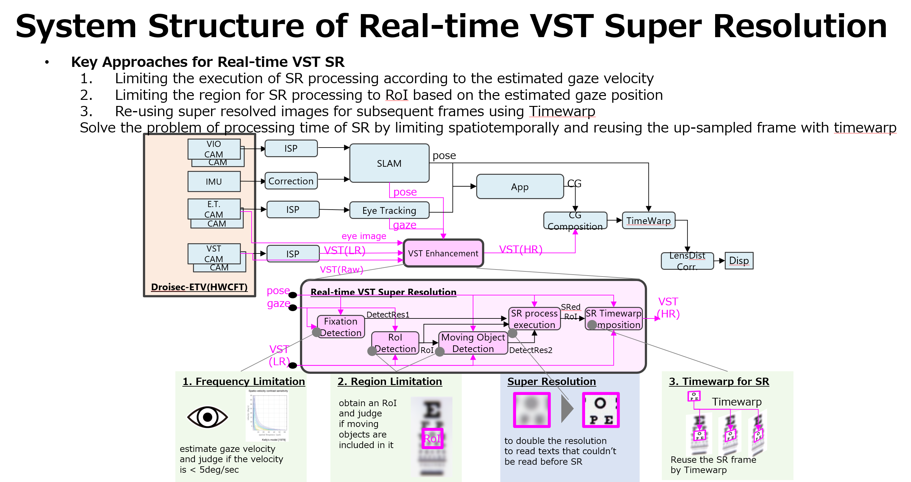
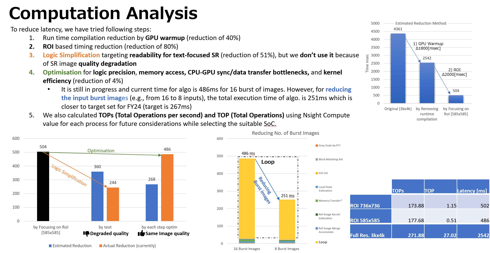
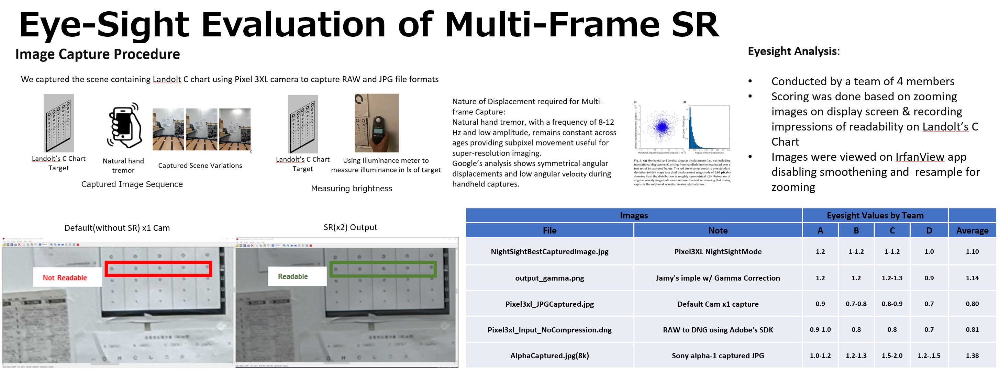
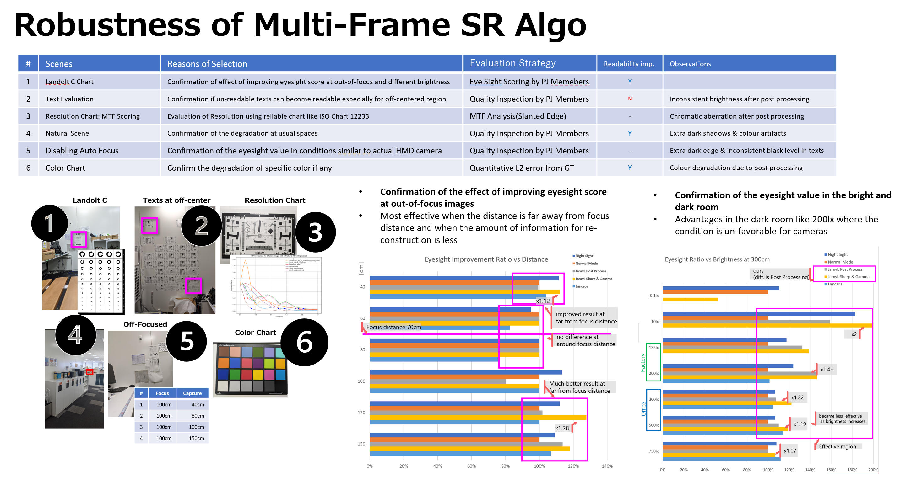

Multi-Frame Super Resolution for XR Display Output
Multi-frame super-resolution pipeline for XR display output. Achieved 2x visual acuity improvement by fusing temporal information across consecutive frames, enhancing the perceived sharpness of head-mounted display content without additional hardware cost.
Real-time VST Super Resolution system designed around three core principles: reducing computation by limiting processing spatiotemporally, and reusing upsampled frames via timewarp.
Solve the problem of processing time of SR by limiting spatiotemporally and reusing the up-sampled frame with timewarp.

System Structure of Real-time VST Super Resolution
Systematic latency reduction through a multi-stage optimization strategy targeting GPU warmup, spatial processing, and kernel-level efficiency.
Current algorithm time: 251ms for 8 burst images (down from 486ms for 16 burst). Calculated TOPs and TOP using Nsight Compute for suitable SoC selection.

Computation analysis showing progressive latency reduction across optimization stages
Rigorous perceptual evaluation using standardized optometric methods, capturing images under conditions that simulate real HMD usage with natural hand tremor.

Eye-sight evaluation methodology using Landolt C-Chart across multiple camera sources
Comprehensive evaluation across six distinct scene categories to assess SR performance under varying conditions and edge cases.
Most effective when distance is far from focus distance (less information for reconstruction). Shows clear advantages in dark room conditions (200 lx) where conditions are unfavorable for cameras.

Robustness testing results across six scene categories